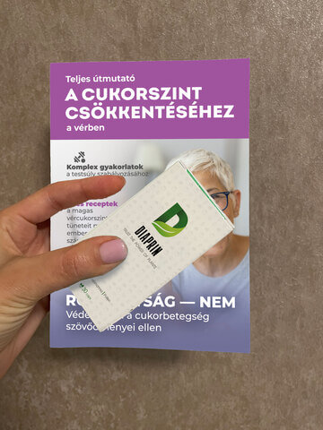

Az emberek segítője 2. típusú cukorbetegség esetén! MINDEN CUKORBETEGNEK JOGA VAN A KEDVEZMÉNYES KÉSZíTMÉNYEKHEZ!
Elindult egy kedvezményprogram, amelynek keretében kedvezményes áron juthat hozzá egy cukorbetegség terápiájára kifejlesztett termékhez! Egy, a diabétesz ellen segítséget nyújtó szerről van szó, amelyet német szakemberek dolgoztak ki.
Csodálatos, hogy ez az új módszer képes segíteni az eredményesebb küzdelemben a 2. típusú cukorbetegség ellen. Mint azt a felmérések, valamint a termék használatának tapasztalata alátámasztotta, a korai stádiumú cukorbetegségnél segít megállítani annak további súlyosbodását, előrehaladott eseteknél pedig elősegíti a tünetek enyhítését.
Ez egy valóban forradalmi szer, amelyet több európai szakember is elismert. Amint megjelent a szerről szóló publikáció, fejlesztőit azonnal megrohamozták a szabadalom megvásárlására tett ajánlatokkal. Először a franciák tettek egy 120 ezer eurós ajánlatot. Utolsóként viszont egy nagy amerikai gyógyszeripari holding próbálta felvásárolni a terméket 35 millió dollárért.а
A külföldi vállalatok a német szakemberek által kifejlesztett szer iránti érdeklődésének valódi oka mindenki számára világos! Hiszen mi lesz, ha eladják ezt a formulát? A külföldi cégek megkapják a szabadalmat és a többi gyárnak megtiltják a formula alapján készített szerek gyártását, míg ők szépen megemelik az árakat a saját gyártású termékeikre. Ebben az esetben az átlagemberek egyszerűen nem tudnak hozzájutni a terápiához szükséges készítményekhez, vagyis nem tudnak javítani az állapotukon. A pletykák szerint egy ilyen termék legalább 3000 dollárba kerülne. Mégis ki tudná megvenni ilyen pénzért?
Ezért a fejlesztést nem adták el, fejlesztői pedig megkezdték a készítmény tömeges terjesztésének a kidolgozását.
Egy ismert német szakember, aki részt vett az új terápiás módszer kidolgozásában, őszinte interjút adott kiadványunknak.
- Elmondaná részletesen, hogyan segít az önök által kidolgozott módszer a 2. típusú cukorbetegség esetében?
- Igen, természetesen. Módszerünk pozitív hatással van az inzulintermelésre és normalizálja a szénhidrát- és lipid-anyagcseréért felelős szervek működését.
Szakemberek megállapították, hogy az élő sejteknek speciális fehérjecsatornáik vannak, amelyeken keresztül különböző anyagok kerülnek a sejtekbe. Mi köze ennek a 2. típusú cukorbetegséghez? Megpróbálom egyszerűen elmondani.
Amennyire azt tudjuk, a 2. típusú cukorbetegség fő oka, hogy szerveink elveszítik az inzulinérzékenységüket. Ezt inzulinrezisztenciának hívják.
Nézzék. Amikor szénhidrát vagy fehérje tartalmú étel kerül a szervezetünkbe, a vérben sok cukor jelenik meg. A hasnyálmirigy erre reagálva elkezdi aktívan termelni az inzulint. Amint az inzulinszint megemelkedik a vérben, ez jelként szolgál a sejtek számára, hogy elkezdjék a glükózt energiává alakítani.
Azonban a sejtek egy bizonyos ponton (leggyakrabban a személy életkorával függ össze) elveszítik azt a képességüket, hogy reagáljanak a hormonális jelre. Sajnos jelenleg a tudomány nem tud választ adni a kérdésre - miért történik ez. Azonban válaszolt egy másikra – ebben az esetben egy sokkal fontosabbra. Nevezetesen, hogyan segíthetünk visszaállítani a sejtek azon képességét, hogy válaszoljanak a hormonális jelekre.
Kiderült, hogy ebben nagy segítséget nyújt a Gymnema sylvestre. Azonban itt is akadt egy kis probléma – a sejtnek biztosíthatjuk a Gymnema sylvestret a laboratóriumban és jobban kezdhetnek el reagálni az inzulinra. De hogyan érjük ezt el a test szintjén?
És itt jött jól a sejtek diffúzió mechanizmusának ismerete a fehérje csatornákon keresztül. Ezek a csatornák nagyon szelektívek az anyagok sejtbe történő bejuttatásában és mint kiderült nem a Gymnema sylvestrére reagálnak (a Gymnema sylvestret nem engedik át), hanem a speciális formájára.
Így, ha ezt az anyagot szedjük, a sejtek ismét képessé válhatnak az inzulinra való reagálásra. És ez a képességük nagyon gyorsan visszatérhet – csak néhány hét rendszeres szedés után. És mit jelent ez egy olyan személynek, aki 2. típusú cukorbetegségben szenved? Ez azt jelenti, hogy MÁR EGY KÚRA UTÁN JELENTŐSEN JOBBAN ÉREZHETI MAGÁT.
Csak képzeljék el! Valaki évekig szenvedett a cukorbetegség miatt és most nagyon jelentős javulást érhet el.
- Végeztek-e valamilyen felmérést a szer hatékonyságával kapcsolatban? Mit mutattak ki?
- Természetesen. A felmérések fontos lépésnek számítanak minden termék fejlesztésében. És mi 2018-tól végeztük őket. Amikor a hónap végi összegzés után megláttuk az eredményeket, kellemesen meglepődtünk. El sem tudtuk képzelni, hogy a szer ilyen hatékony lehet.
A felmérésben résztvevők 96,2%-nál a javulás jelentős volt. A vizsgálatokban összesen 1000 cukorbeteg személy vett részt. Vagyis 962-nél közülük a javulás szembetűnő volt. Mit jelent ez pontosan? Ez azt jelenti, hogy nem szenvednek többé olyan tünetektől, mint az anyagcsere zavarok, magas koleszterinszint, emésztési problémák, nagy éhségérzet.
Ezen kívül nem kell félniük a cukorbetegség olyan veszélyes szövődményeitől, mint a: stroke, szívroham, vakság, vesemedence-gyulladás vagy például a lábak üszkösödése, ami későbbi amputációval járhat.
Megelőzhetik mindezeket és egészségesebbek lehetnek. Az életüket nem nehezíti meg annyira a cukorbetegség. És minderre bármelyik cukorbeteg képes!
- Beszélt a terápia módjáról, de magáról a termékről nem. Mi ez és mi a neve?
- A termék neve . Még sok más, a cukorbetegség terápiájában hasznos vitamint, makro- és mikroelemet tartalmaz. Minden összetevő segít javítani bizonyos folyamatokat a cukorbeteg szervezetében. Nem fogok beszélni az összes összetevőről, csak néhányat említek meg.
|
Gymnema sylvestre |
Segít csökkenteni a cukor mennyiségét a vizeletben és növelni az inzulin szintjét a vérben. |
|
Fügekaktusz |
Kalcium és kálium tartalma miatt segít a szervezetnek az inzulin előállításában. |
|
Fenyő |
Nyugtató, értágító és vízhajtó tulajdonságokkal rendelkezik. |
|
Boróka |
Húgyúti és emésztőrendszeri problémák, sebek és vágások kezelésére és az immunrendszer erősítésére használják. |
|
E-vitamin |
Jó antioxidáns, amely segít megvédeni a szervezetet a sejtek oxidatív károsodásaitól. |
Tehát, amint látják a egy komplex szer, amelynek célja nemcsak az inzulinrezisztencia csökkentése, hanem a szervezet állapotának javítása.
- És mikor jelenik meg a a magyar magángyógyszertárakban?
- Ha őszinte szeretnék lenni, nem tudom megmondani. A magyar bürokrácia különbözik más európai országokétól, úgyhogy ez egy nagyon hosszú folyamat lehet, amely akár évekig is elhúzódhat.
De vannak jó híreim is. Bár ezek csak viszonylag jók. Úgy döntöttünk, az általunk legyártott szert szétosztjuk azok közt, akiknek szükségük van rá. Sajnos mindenkinek nem jut belőle, de legalább ezzel a lépéssel az emberek egy részének segítünk. A megszerzéséhez mindössze csak el kell látogatnia a hivatalos weboldalra és meg kell hagynia elérhetőségeit. A termék megrendeléséhez nincs szükség semmilyen igazolásra. Bárki meg tudja rendelni.
Már 3 hónapja terjesztjük a terméket és ez idő alatt már több mint 1500 cukorbeteg rendelte meg. Mindenkit, aki megkapta a szert arra kérünk, hogy mondják el, segített-e nekik a . Szeretném megmutatni felméréseink eddigi eredményeit. Ezek újra megerősítik a termék hatékonyságát.
- A termék segített, jelentős javulás – a megkérdezettek 94,8%
- Nem nagy mértékű javulás – a megkérdezettek 4,4%
- A termék nem segített – a megkérdezettek 0,3%
- Nehezemre esik megválaszolni – a megkérdezettek 0,5%
- Meddig lesz a termék forgalomban? Valószínűleg nagy rá a kereslet.
- Jelenleg kevesebb, mint a negyede maradt készleten. Hosszú időre nem lesz elég ez a mennyiség. Mivel az utóbbi időben mind több és több cukorbeteg igényelte a terméket – valószínűleg ismerőseiktől hallottak a kiváló tulajdonságairól.
Tehát bármely pillanatban elfogyhat, ezért minden 2. típusú cukorbeteg rendelje meg, amíg még készleten van. Második esély a 2. típusú cukorbetegség ilyen terápiájára talán nem is lesz.
Szerkesztőség:
A megrendeléséhez:
- Látogasson el a hivatalos weboldalra, adja meg telefonszámát, majd kattintson a " megrendelése" gombra.
- A megrendelőlap elküldése után munkatársunk felhívja Önt. El kell mondania cukorbetegsége tüneteit és kórtörténetét. Ez az információ azért fontos, hogy megfelelően szedje a terméket. Továbbá meg kell adnia a kiszállítási címet.
- 3-5 nap után átveheti a terméket a postán.
- Ajándékként kap egy egészségügyi naplót "hogyan lehet legyőzni a cukorbetegséget".Ebben a naplóban hasznos tippeket talál az otthoni egészség javításához.
Hozzászólások
MELÁNIA
Ma megrendeltem a terméket. Elkezdem szedni, már belefáradtam a cukorbetegségbe.
JÁNOS
Érdekes. Köszönöm. Már félfüllel hallottam a szerről. Az ismerősöm dícsérte. Neki nagyon sokat segített.
MIKSA
A termék egyszerűen csodálatos!! Egyike vagyok azoknak, akik már kipróbálták. Segített normalizálni a cukrom. A szomjúság enyhült, a szájszárazság is, a gyakori WC-be szaladgálás elmúlt, már nem szédülök. A cukromat minden nap ellenőriztem – nem növekedett. 2 hónap telt el a termék szedése óta. Egészségesebb embernek érzem magam.
SÁMSON
Kitöltöttem a megrendelői lapot. Szerencsére még van. Fogom szedni. Az egyik fórumon hallottam a cikkükről. Ott aktív vita folyt dícsérték a hatékonyságát
MÁTYÁS
Köszönöm a cikket. Kipróbáltam a terméket. Csodálatos készítmény!
KÁLMÁN
Üdvözlök mindenkit. Kálmán vagyok, 59 éves, induló súly 124 kg, a súlyom ma – 80 kg, magasságom 168 cm. A vércukorszintem 18 és 12 között ingadozott, de volt 29 is. Most - 5,0. 3 hónapig szedtem a terméket. Az eredménnyel több, mint elégedett vagyok. Semmilyen szer nem segített ennyit.
ANDRÁS
Végig kételkedtem. Azt hittem, hogy valami trükk. De a szer már nálam van (elkezdtem szedni). Tegnap vettem át a postán.

MÁRIA
A szomszédom szedte ezt a terméket. Valahogy szóba elegyedtünk, ő mesélte. Neki is sokat segített. Nem tudom igaz-e, de a termékről lelkesen beszélt. Nagyon dícsérte.
LAURA
És mi lesz, ha elfogy? Nagyon ijesztő cukorbetegnek lenni. A szedése után sokkal jobban éreztem magam. De ha újra rosszabbodik az állapotom, mit szedjek? Egyelőre elraktároztam egy pár dobozzal, de van szavatossági ideje is.
ENDRE
Köszönöm a tanácsokat. Megrendeltem a terméket.
ZSUZSA
A használatával kapcsolatban van tapasztalatom és szintén pozitív. A
fent írtak mind igazak. Az ismerősöm gyógyszerész. Ő mesélte, hogy 30 éves
szereket árulnak, amelyek nem is segítenek.

GERGELY
Ez tényleg nem semmi! A terméket csak két hete szedem. Régóta nem éreztem ilyen jól magam. A vércukorszintem már sokat javult.
KITTI
Köszönöm!
megrendelése
KARINA
Szörnyű, ami ezekben a magángyógyszertárakban folyik manapság. Csak régi és haszontalan szereket árulnak. Nemcsak a cukorbetegségre, de más problémákra is. Köszönöm, hogy legalább maguk jót akarnak az embereknek!
